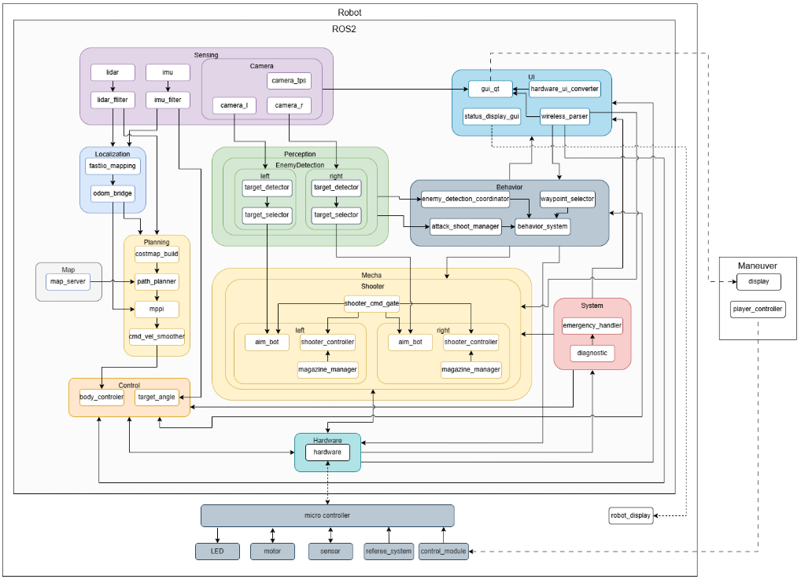

システム概要¶
このページは「どのノードが動き、どう繋がるか」を扱います。 各トピックの型・Publisher / Subscriber・QoS・リマップの一覧はトピック・メッセージ一覧を参照してください。図中のトピック名はデータの流れを示すラベルであり、仕様の正はそちらです。
全体構成図¶

機体全体のノード構成とデータの流れです。ROS2上のノードを役割ごとの層に分け、マイコン（micro controller）以下のハードウェアと、操縦側（Maneuver）までを含めて示しています。
| 層 | 含まれるもの |
|---|---|
| Sensing（LiDAR） | lidar → lidar_filter（Livox Mid-360の点群） |
| Sensing（IMU） | DM-IMU-L1 → core_damiao_imu（/imu） |
| Sensing（Camera） | camera_l, camera_r（左右砲塔）, camera_tps（TPS視点） |
| Localization | fastlio_mapping, odom_bridge |
| Perception（EnemyDetection） | target_detector, target_selector（left / right の2系統） |
| Planning | costmap_build, path_planner, mppi, cmd_vel_smoother |
| Behavior | enemy_detection_coordinator, waypoint_selector, attack_shoot_manager, behavior_system |
| Mecha（Shooter） | shooter_cmd_gate, aim_bot / shooter_controller / magazine_manager（left / right） |
| Control | body_controller, target_angle |
| System | emergency_handler, diagnostic |
| UI | gui_qt, hardware_ui_converter, status_display_gui, wireless_parser |
| Hardware | hardware（EtherCAT経由でマイコンへ） |
図は設計上の全体像です
この図はパイプライン全体が接続された状態を示しています。現在の navigation.launch.py では Planning 層と Localization 層の一部が起動しない状態であるため、実際に動く構成は次節「起動構成の現状」を参照してください。各層の詳細なトピック接続は本ページ後半の個別の図に記載しています。
起動構成の現状¶
navigation.launch.py はパイプライン全体を起動しません
core_launch/launch/navigation.launch.py では、ナビゲーションパイプラインの主要ノードがコメントアウトされており起動しません。
- 無効化中:
map_server_node/odom_bridge_node/path_planner_node/core_mppi_node/cmd_vel_smoother_node/costmap_build_node/ FAST-LIO - 実際に起動するもの: ROS-TCP-Endpoint（sim時）、LivoxドライバとDM-IMU-L1ドライバ（実機時）、静的TF 2本、
body_controller.launch.py、RViz2、localization_node（use_localization:=true時）
現在はパッケージごとのlaunchファイルを個別に起動する構成に移行しています。以下の各launchファイルを必要に応じて組み合わせて使用してください。
launchファイル一覧¶
| launchファイル | 起動するノード |
|---|---|
core_launch/navigation.launch.py |
ros_tcp_endpoint（sim）/ livox_ros_driver2・damiao_imu_node（実機）/ 静的TF / body_controller / RViz2 / localization_node（オプション） |
core_launch/state_publisher.launch.py |
robot_state_publisher, joint_state_publisher（URDF: core2025_attacker.urdf） |
core_launch/imu_filter.launch.py |
imu_filter_madgwick（imu → filtered_imu） |
core_body_controller/body_controller.launch.py |
damiao_imu_node（既定）、body_control_node, target_angle_node |
core_damiao_imu/damiao_imu.launch.py |
damiao_imu_node |
core_path_planner/path_planner.launch.py |
path_planner_node |
core_mppi/mppi.launch.py |
core_mppi_node |
core_path_follower/path_follower.launch.py |
core_path_follower_node |
core_costmap_builder/costmap_build.launch.py |
costmap_build_node（+ デバッグ用静的TF） |
core_behavior_system/behavior_system.launch.py |
behavior_system, waypoint_selector, enemy_detection_coordinator, attack_shoot_manager |
core_camera/camera.launch.py |
usb_cam × 3（left / right / tps） |
core_enemy_detection/detection.launch.py |
target_detector, target_selector（left / right の2組） |
core_shooter/shooter.launch.py |
shooter_cmd_gate, shooter_controller / magazine_manager / aim_bot（left・right 各1） |
core_mode/mode.launch.py |
emergency_handler, diagnostic（/system/emergency 名前空間） |
core_hardware/core_hardware.launch.py |
core_hardware |
core_ros_player_controller/wireless_parser_node.launch.py |
wireless_parser_node |
core_localization/localization.launch.py |
localization_node（単体テスト用） |
core_qt_gui/hud.launch.py |
gui_qt, hardware_ui_converter_node |
core_status_gui/status_display_gui.launch.py |
status_display_gui |
ナビゲーションパイプライン¶
破線枠は現在 navigation.launch.py で無効化されているノードを示します。
graph TB
subgraph Inputs["入力"]
Unity["Unity Sim"]
FASTLIO["FAST-LIO"]
MapPNG["core1_field.png"]
LiDAR["Livox Mid-360"]
DMIMU["DM-IMU-L1"]
end
subgraph Behavior["行動計画"]
WaypointSelector["waypoint_selector"]
BehaviorSystem["behavior_system"]
end
subgraph Bridge["データ変換"]
OdomBridge["odom_bridge_node"]
MapServer["map_server_node"]
end
subgraph Planning["経路計画・コストマップ"]
PathPlanner["path_planner_node"]
CostmapBuilder["costmap_build_node"]
end
subgraph Following["経路追従（いずれか）"]
MPPI["core_mppi_node"]
PathFollower["core_path_follower_node"]
end
Smoother["cmd_vel_smoother_node"]
subgraph Control["車体制御"]
BodyController["body_control_node"]
TargetAngle["target_angle_node"]
Hardware["core_hardware"]
end
RViz["RViz2"]
Unity -->|/sim_odom| OdomBridge
FASTLIO -->|/Odometry| OdomBridge
MapPNG --> MapServer
LiDAR -->|/livox/lidar| CostmapBuilder
DMIMU -->|/imu| TargetAngle
WaypointSelector -->|/selected_pose| BehaviorSystem
BehaviorSystem -->|/goal_pose| PathPlanner
OdomBridge -->|/start_pose| PathPlanner
OdomBridge -->|/odom| MPPI
OdomBridge -->|/odom| PathFollower
OdomBridge -->|TF| RViz
MapServer -->|/map| PathPlanner
MapServer -->|/costmap/global| MPPI
PathPlanner -->|/planned_path| MPPI
PathPlanner -->|/planned_path| PathFollower
CostmapBuilder -->|/costmap/local| MPPI
MPPI -->|/cmd_vel_raw| Smoother
Smoother -->|/cmd_vel| BodyController
PathFollower -->|/cmd_vel| BodyController
MPPI -->|/goal_reached| BehaviorSystem
PathFollower -->|/goal_reached| BehaviorSystem
BodyController -->|/body_omega| TargetAngle
BodyController -->|/can/tx| Hardware
TargetAngle -->|"/can/tx（ID=4）"| Hardware
subgraph Localization["局在化（実機オプション）"]
PCDMap["PCD地図"] --> LocalizationNode["localization_node"]
end
FASTLIO -->|/cloud_registered| LocalizationNode
LocalizationNode -->|"map→odom TF"| RViz
style MapPNG fill:#e1f5fe,color:#333
style Unity fill:#e1f5fe,color:#333
style FASTLIO fill:#e1f5fe,color:#333
style LiDAR fill:#e1f5fe,color:#333
style DMIMU fill:#e1f5fe,color:#333
style Localization fill:#e8f5e9,color:#333
style Behavior fill:#fff3e0,color:#333
style OdomBridge stroke-dasharray: 5 5
style MapServer stroke-dasharray: 5 5
style PathPlanner stroke-dasharray: 5 5
style CostmapBuilder stroke-dasharray: 5 5
style MPPI stroke-dasharray: 5 5
style Smoother stroke-dasharray: 5 5経路追従ノードの使い分け
core_mppi_node と core_path_follower_node はどちらも /planned_path と /odom を購読する排他的な選択肢で、同時には起動しません。速度指令の出力先が異なり cmd_vel_smoother_node を経由するかどうかが変わるため、切り替える際はトピック・メッセージ一覧で経路を確認してください。
敵検出・射撃パイプライン¶
敵検出は砲塔ごと（left / right）に独立した target_detector + target_selector の組が動作します。
graph LR
subgraph Camera["カメラ（usb_cam）"]
CamLeft["camera_left"]
CamRight["camera_right"]
end
subgraph DetectLeft["left 名前空間"]
DetL["target_detector"] -->|damage_panels_infomation| SelL["target_selector"]
end
subgraph DetectRight["right 名前空間"]
DetR["target_detector"] -->|damage_panels_infomation| SelR["target_selector"]
end
Coordinator["enemy_detection_coordinator"]
ShootManager["attack_shoot_manager"]
Gate["shooter_cmd_gate"]
subgraph ShooterLeft["left 名前空間"]
AimL["aim_bot"]
CtrlL["shooter_controller"]
MagL["magazine_manager"]
end
subgraph ShooterRight["right 名前空間"]
AimR["aim_bot"]
CtrlR["shooter_controller"]
MagR["magazine_manager"]
end
Hardware["core_hardware"]
CamLeft -->|/turret_camera_left/color/image| DetL
CamRight -->|/turret_camera_right/color/image| DetR
SelL -->|/left/target_pose| AimL
SelR -->|/right/target_pose| AimR
SelL -->|/left/target_pose| Coordinator
SelR -->|/right/target_pose| Coordinator
Coordinator -->|/enemy_detected| ShootManager
ShootManager -->|"/{side}/shoot_fullauto"| Gate
Gate -->|"/{side}/shoot_cmd"| CtrlL
Gate -->|"/{side}/shoot_cmd"| CtrlR
Gate -->|"/{side}/manual_mode<br>/{side}/manual_pitch_angle"| AimL
Gate -->|"/{side}/manual_mode<br>/{side}/manual_pitch_angle"| AimR
CtrlL <-->|"shoot_status / regrip_active"| MagL
CtrlR <-->|"shoot_status / regrip_active"| MagR
AimL -->|/can/tx| Hardware
AimR -->|/can/tx| Hardware
CtrlL -->|/can/tx| Hardware
CtrlR -->|/can/tx| Hardware図中のトピック名はリマップ後の名前です
/{side}/target_pose は launch ファイルでのリマップ後の名前で、ノード内部の名前とは異なります。対応表はトピック・メッセージ一覧を参照してください。
システム管理¶
graph LR
subgraph SystemMode["/system/emergency 名前空間"]
Diagnostic["diagnostic"]
EmergencyHandler["emergency_handler"]
Diagnostic -->|"microcontroller_emergency<br>receiver_emergency"| EmergencyHandler
end
HWSwitch["非常停止スイッチ"] -->|/emergency| EmergencyHandler
JointStates["/joint_states"] --> Diagnostic
Wireless["/wireless"] --> Diagnostic
WirelessParser["wireless_parser_node"]
BodyController["body_control_node"]
ShooterCtrl["shooter_controller"]
AimBot["aim_bot"]
GUI["gui_qt / status_display_gui"]
Wireless --> WirelessParser
WirelessParser -->|/cmd_vel| BodyController
EmergencyHandler -->|"/system/emergency/hazard_status"| BodyController
EmergencyHandler -->|"/system/emergency/hazard_status"| ShooterCtrl
EmergencyHandler -->|"/system/emergency/hazard_status"| AimBot
EmergencyHandler -->|"/system/emergency/hazard_label"| GUI
WirelessParser -.->|"/system/emergency/hazard_status"| BodyControllerhazard_status の発行元が2系統ある
図の破線が示すとおり、/system/emergency/hazard_status は emergency_handler と wireless_parser_node の2箇所から発行されます。購読側の一覧と注意点はトピック・メッセージ一覧を参照してください。
ノード一覧¶
ナビゲーション¶
| ノード | パッケージ | 言語 | 役割 |
|---|---|---|---|
odom_bridge_node |
core_launch | Python | オドメトリソース切替、座標変換、TFブロードキャスト |
map_server_node |
core_launch | Python | PNG画像をOccupancyGridに変換してパブリッシュ |
path_planner_node |
core_path_planner | C++ | A*アルゴリズムによるグローバル経路計画 |
costmap_publisher_node |
core_path_planner | C++ | テスト用コストマップ配信（/map, /local_costmap） |
core_mppi_node |
core_mppi | C++ | MPPIローカル制御、ゴール到達判定 |
core_path_follower_node |
core_path_follower | C++ | カスケードPID / Pure Pursuit による経路追従、ゴール到達判定 |
cmd_vel_smoother_node |
core_cmd_vel_smoother | C++ | cmd_vel EMA平滑化フィルタ |
costmap_build_node |
core_costmap_builder | C++ | LiDAR点群からローリングウィンドウ式ローカルコストマップ生成 |
localization_node |
core_localization | C++ | NDT/ICPによるPCDマップベースのグローバル局在化（map→odom 動的TF） |
行動計画¶
| ノード | パッケージ | 言語 | 役割 |
|---|---|---|---|
behavior_system |
core_behavior_system | C++ | 状態遷移による行動管理、/goal_pose 発行 |
waypoint_selector |
core_behavior_system | C++ | ウェイポイント選択・可視化 |
enemy_detection_coordinator |
core_behavior_system | C++ | 左右砲塔の敵検出結果の統合 |
attack_shoot_manager |
core_behavior_system | C++ | 自動射撃指令（/{side}/shoot_fullauto）の管理 |
車体制御・ハードウェア¶
| ノード | パッケージ | 言語 | 役割 |
|---|---|---|---|
body_control_node |
core_body_controller | C++ | cmd_vel→オムニホイールCAN指令変換、レートリミッタ |
target_angle_node |
core_body_controller | C++ | 車体回転角度PID制御（IMU+エンコーダ） |
damiao_imu_node |
core_damiao_imu | Python | DM-IMU-L1 USB受信、内部EKF姿勢を/imuへ配信 |
core_hardware |
core_hardware | C++ | EtherCAT（SOEM）によるTeensy41スレーブ通信 |
core_hardware_usb |
core_hardware | C++ | USBシリアル経由のTeensy通信（launchでは未起動） |
robot_state_publisher |
（外部） | C++ | URDF（core2025_attacker.urdf）からのTF配信 |
操縦入力¶
| ノード | パッケージ | 言語 | 役割 |
|---|---|---|---|
wireless_parser_node |
core_ros_player_controller | C++ | /wireless 7バイトを解析し、車体制御・射撃・非常停止・行動計画の各トピックへ展開 |
wireless_parser_node は制御ノードではありません
パッケージ名に controller とありますが制御則は持たず、操縦者入力（キーボード＋マウス）をトピックに変換するパーサです。出力先は車体制御（/cmd_vel, /rotation, /ads）、射撃（/manual_mode, /manual_pitch, /shoot_motor, /right/shoot_fullauto, /reloading）、非常停止（/system/emergency/hazard_status）、行動計画（/auto_point_select, /selected_pose）の4サブシステムに跨ります。
/wireless の values[3] bit1（自動フラグ）で出力が切り替わり、自動モード時は /selected_pose と /auto_point_select のみ、手動モード時は残りを発行します。/manual_mode / /test_mode / /system/emergency/hazard_status はモードに関わらず常時発行されます。
敵検出・射撃¶
| ノード | パッケージ | 言語 | 役割 |
|---|---|---|---|
usb_cam |
core_camera | C++ | USBカメラドライバ（left / right / tps の3台） |
target_detector |
core_enemy_detection | C++ | カメラ画像からダメージパネル検出（砲塔ごとに1つ） |
target_selector |
core_enemy_detection | C++ | 最大面積パネルのターゲット選択（砲塔ごとに1つ） |
shooter_cmd_gate |
core_shooter | C++ | 射撃コマンドゲート（左右振り分け） |
shooter_controller |
core_shooter | C++ | 射撃モーター・ローディング制御（左右各1） |
magazine_manager |
core_shooter | C++ | ディスクマガジン管理（左右各1） |
aim_bot |
core_shooter | C++ | ビジョンベースターゲット追尾（左右各1） |
システム管理・GUI¶
| ノード | パッケージ | 言語 | 役割 |
|---|---|---|---|
emergency_handler |
core_mode | C++ | 緊急信号集約・ハザード状態管理 |
diagnostic |
core_mode | C++ | マイコン/受信機ハートビート監視 |
gui_qt |
core_qt_gui | C++ | 操縦者向けHUD |
hardware_ui_converter_node |
core_qt_gui | C++ | ハードウェア情報のUI向け変換 |
status_display_gui |
core_status_gui | Python | 行動状態・ハザード状態の表示 |
ros_tcp_endpoint |
ROS-TCP-Endpoint | Python | Unity-ROS2 TCPブリッジ |
パッケージ名とディレクトリ名の不一致
core_qt_gui ディレクトリの ROS パッケージ名は gui_qt です。ros2 launch / ros2 run では gui_qt を指定してください。
起動モード¶
navigation.launch.py は以下の引数を受け付けますが、前述の通りパイプライン本体は無効化されているため、この表が示す構成をそのまま再現することはできません。
| モード | TCP EP | odom | localization |
|---|---|---|---|
| sim（デフォルト） | o | sim | x |
| sim + FAST-LIO | o | FAST-LIO | x |
| 実機 | x | FAST-LIO | x |
| 実機 + localization | x | FAST-LIO | o |
静的TF¶
navigation.launch.py で以下の静的TFがブロードキャストされます:
| 親フレーム | 子フレーム | 変換 |
|---|---|---|
map |
odom |
恒等変換（デフォルト）。use_localization:=true 時は localization_node が動的に更新 |
base_link |
livox_frame |
z=+0.5m, roll=π（上下反転） |
関連ページ¶
- メカ構成 — 機体寸法、可動範囲、駆動系・砲塔・装填機構
- 回路構成 — ピン配置、CANバス構成、モータID割り当て、EtherCAT PDO
- トピック・メッセージ一覧 — トピック名と型の一覧